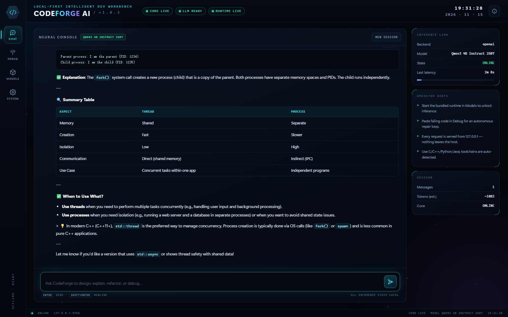

Five steps: build the stack, launch the console, install the runtime, download a model, start inference. After this, unplug the network.
Provision JDK 17 if needed, compile the C helper and C++ core, build the Win32 client, package the Java server and run the self-test.
Windows: the native control center. Linux / macOS: the bootstrap runner. Both bind only to 127.0.0.1.
One click in Models. The server resolves the right CPU asset for your platform, verifies its hash and extracts it safely.
Start with Qwen3 4B on 8 GB machines. The domestic mirror is used by default, transfers resume after interruptions and every file is SHA-256 verified.
The LLM chip turns green. Ask a question, or paste failing code and let the repair loop compile, diagnose and patch it.

Core LLM Runtime all green